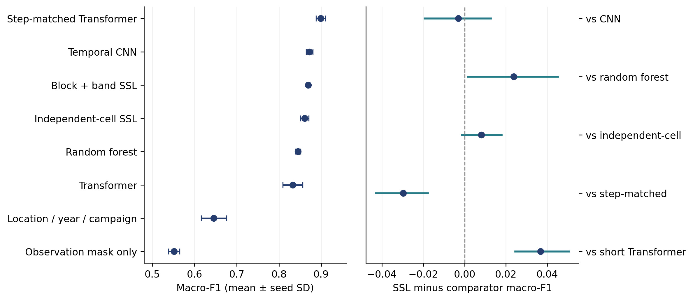

ORMAN SSL / PAPER_V4 / 27 EYLÜL 2026Gerçek deneylerden bilimsel makale dosyasına
Orman kesimini Sentinel-2 zaman serilerinden sınıflandıran modellerin mekânsal ayrım ve eğitim bütçesi denetimi.
180tamamlanan eğitim
2.213gerçek konum
5 × 3coğrafi kat × seed
45başarılı test
Bilimsel sonuç
%20 etiketle SSL macro-F1 0,8690; kısa eğitimli Transformer 0,8322. Eşlenmiş grup bootstrap fark aralığı [0,0245; 0,0506].
Tam etiketle CNN 0,9299, SSL 0,9287. Bu sayılar doğruluk oranı değil, üç seed üzerinden ortalama macro-F1 değerleridir.
Tüm karşılaştırmalar
| Etiket bütçesi | Yöntem | Macro-F1 ± seed SD | AP |
|---|
| %20 | Temporal CNN | 0.8721 ± 0.0081 | 0.8494 |
| %20 | Bağımsız hücre SSL | 0.8609 ± 0.0098 | 0.8604 |
| %20 | Yalnız gözlem maskesi | 0.5515 ± 0.0129 | 0.1738 |
| %20 | Yalnız konum / yıl / kampanya | 0.6455 ± 0.0300 | 0.3979 |
| %20 | Random forest | 0.8452 ± 0.0058 | 0.7969 |
| %20 | SSL Transformer | 0.8690 ± 0.0043 | 0.8636 |
| %20 | Adım bütçesi eşlenmiş Transformer | 0.8987 ± 0.0112 | 0.8445 |
| %20 | Transformer | 0.8322 ± 0.0236 | 0.8419 |
| %100 | Temporal CNN | 0.9299 ± 0.0071 | 0.9273 |
| %100 | Random forest | 0.8669 ± 0.0028 | 0.8382 |
| %100 | SSL Transformer | 0.9287 ± 0.0049 | 0.9337 |
| %100 | Transformer | 0.9285 ± 0.0057 | 0.9227 |
Önce beş katın ayrılmış tahminleri birleştirilir, sonra her seed için ölçüt hesaplanır. SD güven aralığı değildir. AP average precision ölçütüdür.
Kontrol deneyleri

Yapılandırılmış maskelemenin bağımsız hücre maskelemesine üstünlüğü net değil. Yalnız konum/yıl/kampanya ve yalnız eksik gözlem maskesi kullanan kontroller örnekleme bilgisinin de tahmin edici olduğunu gösteriyor.
Son denetim ve hata incelemesi
Ham Parquet verilerinden 2.213 örnek yeniden oluşturuldu; tüm diziler ve örnek bilgileri birebir aynı. 215 kaynak olayının hiçbiri katlar arasında bölünmüyor; birebir aynı gözlem dizileri bulunmadı.
81 konum, tam etiketli CNN veya SSL modelinin üç seed'inden en az ikisinde yanlış sınıflandırıldı. Bunlar inceleme adaylarıdır; gerçek etiketleri değiştirilmedi. Aşağıdaki tablo seçilen modelde en az iki seed'in yanıldığı adayları gösterir.
| Konum | Yıl / kat | Gerçek etiket | Yanılan seed | Ort. kesim olasılığı |
|---|
Kapsam ve kalan bilimsel sınır
Çalışma aynı veri üzerinde önceki model geliştirmelerinden sonra yürütüldü. Coğrafi katlarda doğrudan eğitim/test çakışması yok; ancak bu, bağımsız dış doğrulama olduğu anlamına gelmez.
Kullanılmamış konum taramasında 110 orman ve yalnızca 1 kesim kaldığı için bu grup skorlanmadı. Türkiye genellemesi, erken uyarı, yeni mimari ve SOTA iddiası yapılmıyor.
İngilizce makale, yöntem eki, kaynakça, 3 bilimsel şekil, 4 tablo, deney kayıtları ve kod hazır. Yayın öncesinde gerçek yazarlar bilimsel içeriği ve beyanları incelemeli; dergi ve bağımsız doğrulama kararı araştırmacılarla verilmeli.